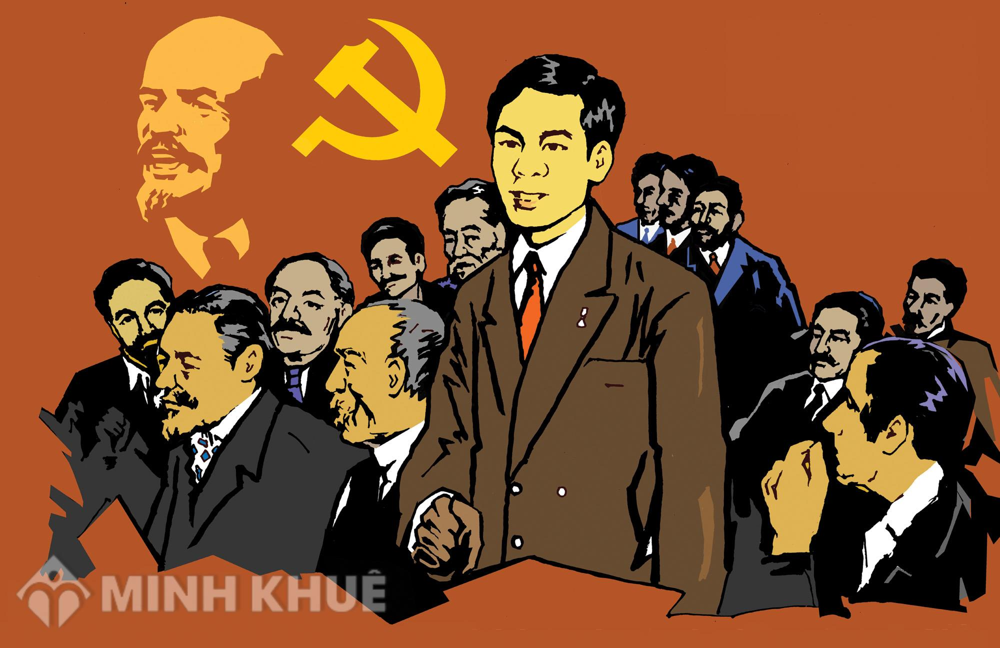

1. Bối cảnh lịch sử
5 năm Đổi mới (1986–1991)
Thành tựu
- Kinh tế dần thoát khỏi khủng hoảng, sản xuất phát triển, lạm phát được kiềm chế
- Đời sống nhân dân cải thiện rõ rệt, cơ chế thị trường bước đầu hình thành
- Quan hệ đối ngoại mở rộng, vị thế Việt Nam trên trường quốc tế được nâng cao
VS
Khó khăn
- Kinh tế chưa ổn định vững chắc, đời sống nhiều nơi còn thấp
- Tình hình thế giới có biến động lớn: Liên Xô và các nước XHCN Đông Âu khủng hoảng, sụp đổ, làm dấy lên những hoài nghi về con đường xã hội chủ nghĩa
Trong bối cảnh đầy thử thách đó, Đại hội VII được triệu tập với nhiệm vụ lịch sử:
Tổng kết thực tiễn 5 năm Đổi mới, khẳng định con đường đi lên chủ nghĩa xã hội ở Việt Nam và hoàn thiện cơ sở lý luận cho thời kỳ quá độ.

2. Nội dung và quyết nghị của Đại hội
1.176 đại biểu | 2 triệu đảng viên

3. Ý nghĩa – Tác động lịch sử
Về lý luận
Click để xem chi tiết
Về lý luận
- Lần đầu tiên, Đảng ban hành Cương lĩnh xây dựng đất nước trong thời kỳ quá độ lên chủ nghĩa xã hội, xác lập cơ sở lý luận và phương hướng tổng thể cho công cuộc đổi mới lâu dài
- Cương lĩnh 1991 khẳng định con đường độc lập dân tộc gắn liền với chủ nghĩa xã hội, phản bác quan điểm cho rằng "con đường XHCN đã lỗi thời"
Về thực tiễn
Click để xem chi tiết
Về thực tiễn
- Tạo niềm tin, định hướng và động lực mạnh mẽ cho toàn Đảng, toàn dân trong thời kỳ mới
- Góp phần củng cố chính trị, ổn định xã hội, đưa công cuộc đổi mới đi vào chiều sâu
Về đối ngoại
Click để xem chi tiết
Về đối ngoại
- Đại hội VII đánh dấu sự chuyển biến mạnh mẽ trong tư duy đối ngoại, mở rộng quan hệ quốc tế, từng bước phá thế bao vây, cấm vận, tạo môi trường thuận lợi cho phát triển kinh tế
.jpg)